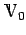

Inhalt Index DeskTop Bronstein

 Funktionalanalysis Vektorräume Lineare und affin-lineare Teilmengen
Funktionalanalysis Vektorräume Lineare und affin-lineare Teilmengen


Eine Teilmenge eines Vektorraumes  der Gestalt
der Gestalt
| (12.9) |
wobei ein fixiertes Element und  ein linearer Teilraum ist, heißt affin-linearer Teilraum oder affine Mannigfaltigkeit, die man (im Falle von ) als Verallgemeinerung einer nicht durch den Nullpunkt verlaufenden Geraden oder Ebene in  ansehen kann.
ansehen kann.